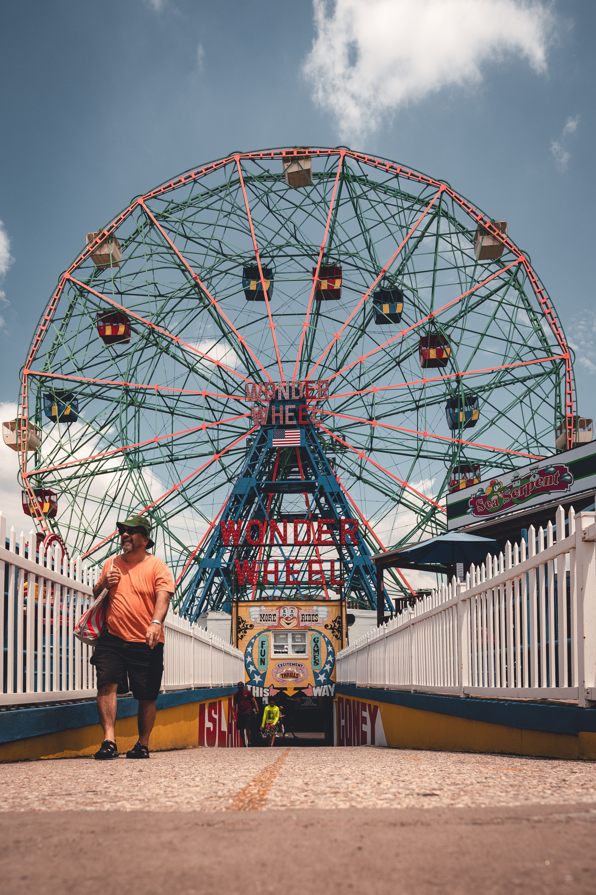
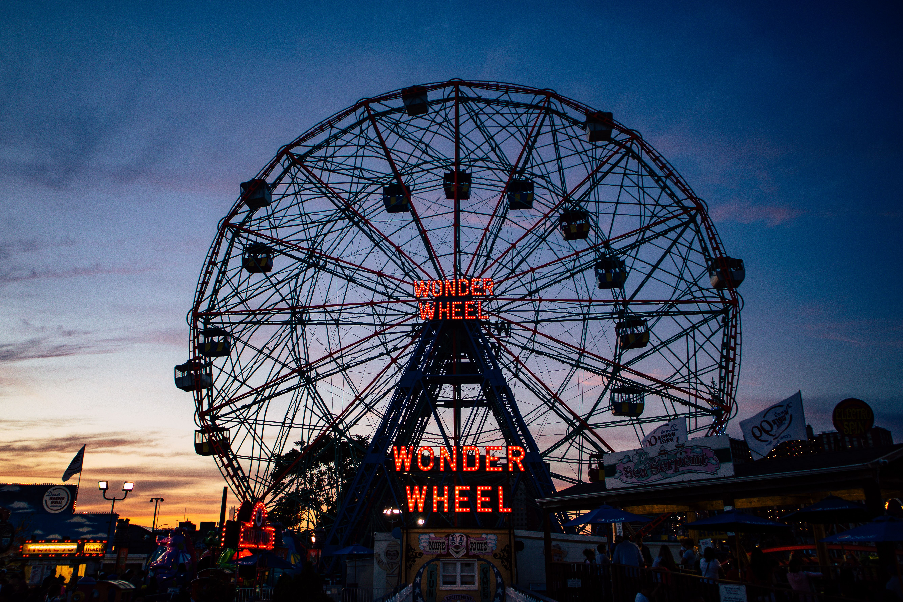
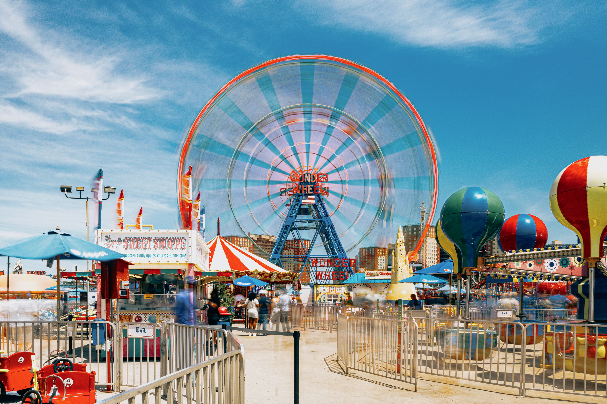

Wonder Wheel
A century-old Ferris wheel that still lights up the Coney Island skyline.
Rising above the boardwalk since 1920, the Wonder Wheel is one of New York City's most beloved seaside icons. A ride in one of its cars offers 15-story-high views of the Atlantic and the vibrant energy of Coney Island.

About
Built: The Wonder Wheel was built in 1920 by the Eccentric Ferris Wheel Company and has operated continuously ever since. It became a New York City Landmark in 1989 and is still family-run by the Vourderis family as part of Deno's Wonder Wheel Amusement Park.
Today: It remains a centerpiece of Deno's Wonder Wheel Amusement Park, open seasonally from spring through fall. It features 24 passenger cars—some fixed, some sliding—and provides views of the ocean, beach, and surrounding amusement district.
Directions
Go to Deno's Wonder Wheel Amusement Park at 3059 West 12th Street, Brooklyn, near the Coney Island Boardwalk.
Gallery


